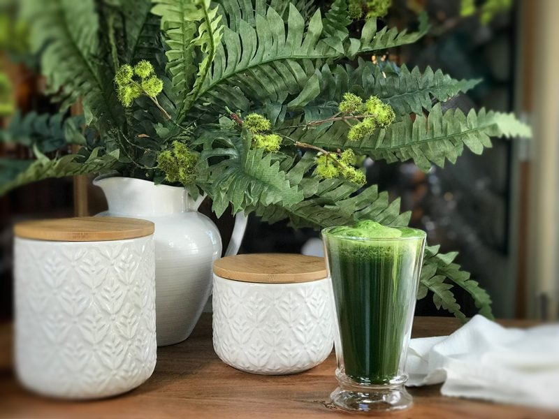

Spring Cleaning Juice
It’s time to do a little spring cleaning. Your house may need it, but so does your body.
For detoxing purposes, apple juice is fantastic for cleansing the colon and known to be a natural remedy for constipation. The high pectin content and mineral salts have a powerful laxative effect. But the real power of it is heightened when you have equal amounts of spinach and apple juice. The oxalic acid in the spinach mixes with the pectin and mineral salts in the apples to create a potent “holiday constipation” elixir that is pretty darn potent. For the best results, drink one cup every four hours for three days. Drink any more, and you better be prepared to stay near a restroom.

Spinach & Apple Juice Benefits
Iron
Spinach juice contains 3.1 mg of iron per 3.5 oz. serving, which is quite high for a non-animal-based food. Having healthy iron intake promotes blood health and prevents anemia. However, getting your body to absorb the bulk of the iron from the juice can be tricky. Make sure to combine spinach juice with a bit of citrus juice. The acid in citrus breaks down the iron in the spinach, making it easier for your body to take in. Apple juice is a good source of minerals such as iron, magnesium, zinc, phosphorus, copper, and chlorine. Helping to make your skin glow and gives your nails and hair a healthy look.
Phosphorus
A 3.5 oz. serving of spinach juice offers 51 mg of phosphorus. This high amount of phosphorus is a particularly valuable spinach juice benefit because the mineral helps to duplicate DNA and RNA. Additionally, phosphorus supports healthy bones and teeth and promotes kidney health.
Magnesium
Spinach juice has 88 mg of magnesium per serving. Magnesium helps support healthy bone structure and aids in muscle function. It is especially important for those with restless leg syndrome or muscle fatigue.
Calcium
A serving of spinach juice contains 93 mg of calcium, which is vital for building strong bones and teeth. This health benefit of spinach juice can really help vegetarians and the lactose intolerant. Getting calcium through vegetables is especially important for those who do not consume dairy products.
Vitamins
A 3.5 oz. glass of spinach juice is a strong source of vitamins A, C, E, and K. Apple juice contains an ample amount of vitamins A and C. Vitamin A helps to improve vision as it contains beta-carotene. Vitamin C is a good source of antioxidants that strengthens the immune system, helps heal wounds, and promotes good oral health. Vitamin E neutralizes free radicals in the body and is a key component in a healthy circulatory system. Vitamin K aids in blood clotting and kidney function.
Laxative Effect
Spinach juice has a mild laxative effect that can be helpful for those who are having digestive issues. Adding spinach and apple juice to a daily regimen keeps the digestive tract moving smoothly and evenly. Apples are a wonderful source of fiber, both soluble and insoluble. The insoluble fiber in an apple cleans the intestinal tract and clears the way for food to travel easily through the digestive system. Apple juice contains pectin which not just flushes the toxic materials from the body but also keeps the intestine in good health and helps in relieving perpetual constipation. Source (1 & 2)
You can always add other ingredients to this juice; celery, cucumber, ginger… but I found that the two played exceptionally well together. I hope you enjoy this simple yet powerful juice. Blessings and happy spring cleaning! amie sue
Ingredients:
Yields: roughly 2 cups
- 3 organic apples
- 6 cups organic spinach, washed
- 1 lemon, peeled
 Preparation:
Preparation:
Juicer method:
- Place the apples, lemon, and spinach through your juicer.
- Ball up a handful of spinach before pushing it into your juicer’s feeder and follow with the apple to push it through. Keep in mind you will need a juicer that can juice greens. I love using the Omega Juicer.
Blender method
- Place the apples, lemon, and spinach in the blender carafe and blend until smooth.
- Pour the mix through a nut bag and squeeze the juice out into a large bowl.
Drink the juice and compost the pulp or save it to add to dehydrated crackers.
- Consume 1 cup of juice every four hours unstrained for maximum benefit.
- Juice tends to oxidize quickly. As this happens, the levels of nutrients begin to fall. This is why it is so important to drink juice as soon as possible after you make it. Some juicers work better than others at keeping oxidation at bay, allowing you to make enough juice to last a couple of days in the refrigerator. However, the sooner you drink it, the more nutritional value it has.
Disclaimer
This website is not intended to provide medical advice. All content, including text, graphics, images, and information available on this site is for general informational, entertainment, and educational purposes only. The content is not intended to be a substitute for professional diagnosis or treatment. The author of this site is not responsible for any adverse effects that may occur from the application of the information on this site. You are encouraged to make your own healthcare decisions, based on your research and in partnership with a qualified healthcare professional.
© AmieSue.com